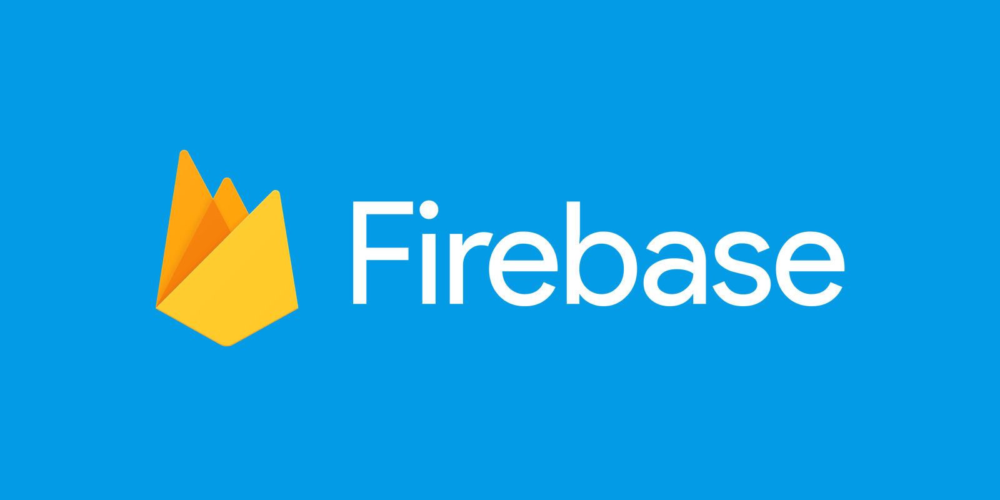
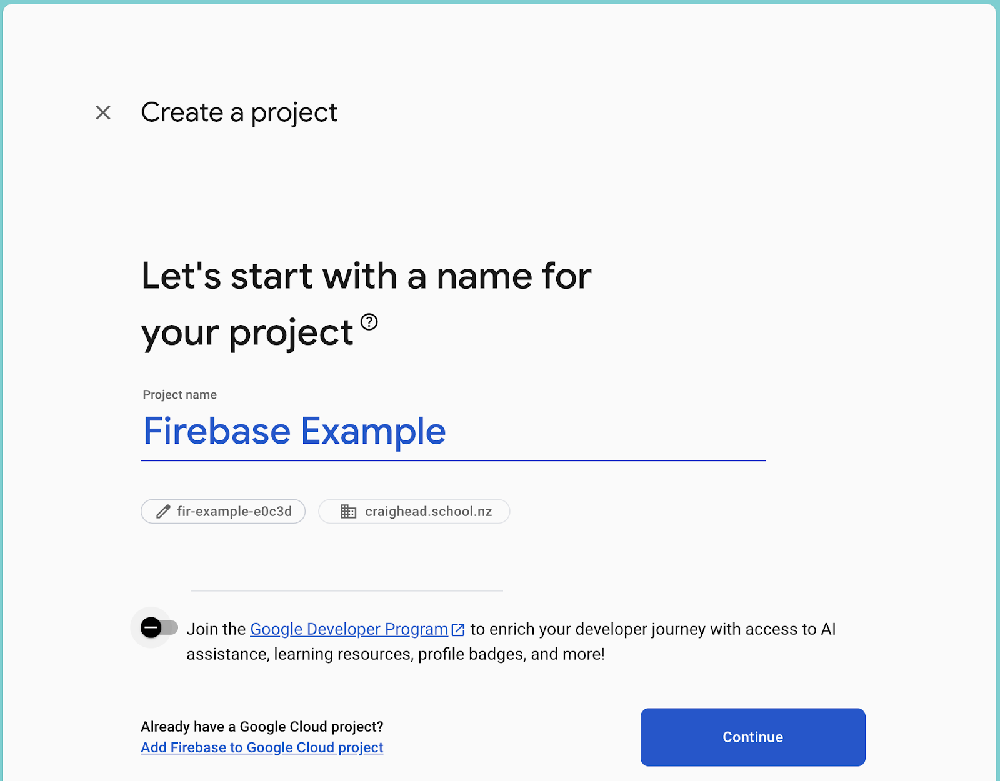
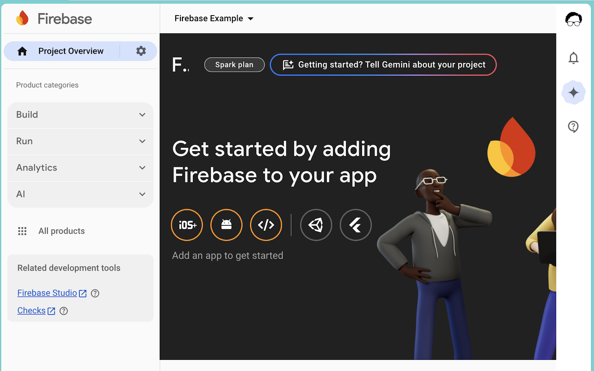
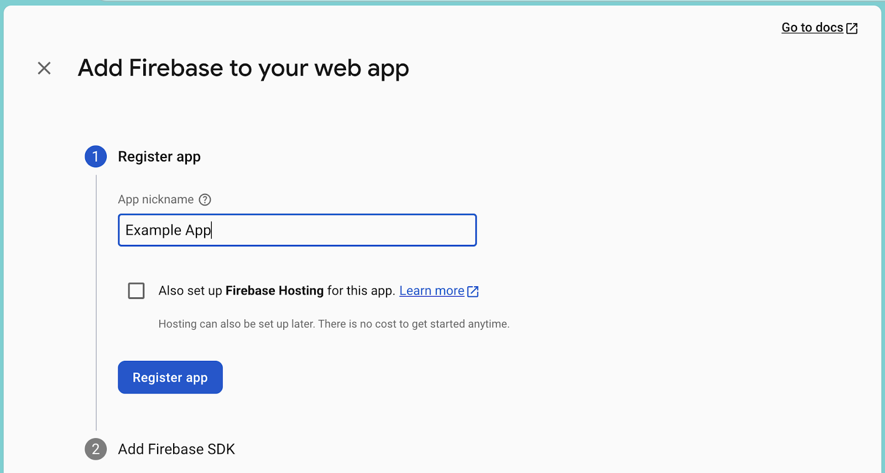
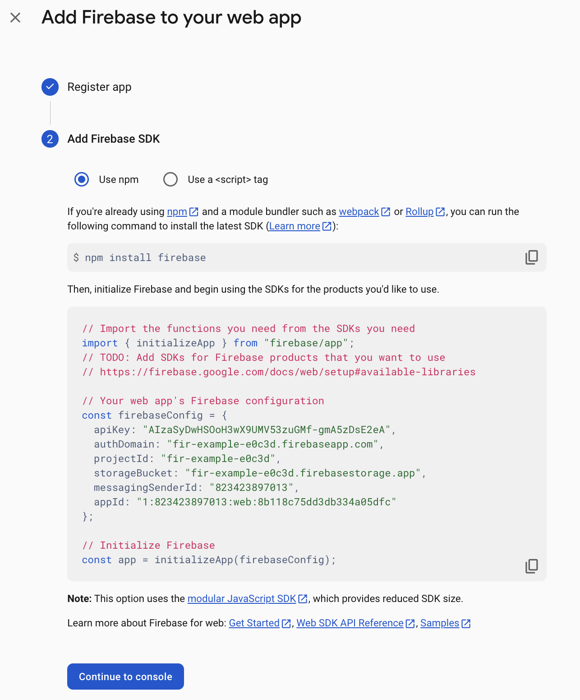
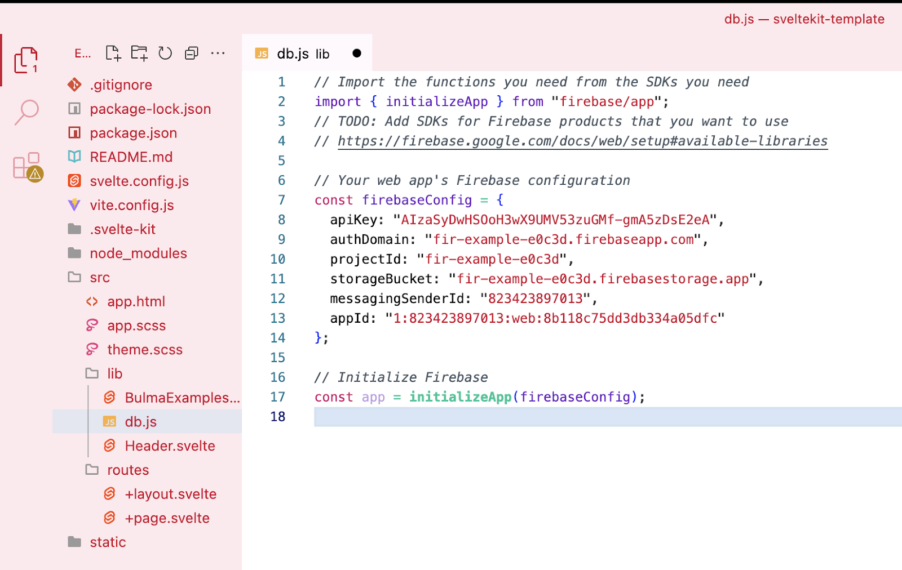

Firebase is a free Google product that lets you build apps with databases, analytics, hosting, and more. In this example, we're going to use it for the database features.

It might take a few moments to set up everything for the first time.
You need to tell Firebase that you have an app so that it can give you the configuration information you'll need to connect to it. To get the specific connection details for your web app, you first need to register it in your Firebase project.


Once you've registered your app, Firebase will give you some instructions and information for you to use to add the Firebase SDK which will connect your app to the Firestore database.
Keep this window open for a while - you'll need to refer back to it in the following steps.
Your app will need the Firebase files and configuration information to be able to connect to Firebase and your database.
npm install firebaselib/ folder called db.js
